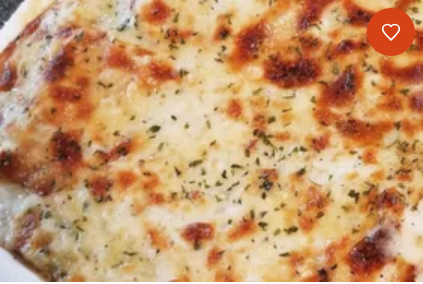

Lasagna

Description
Super Cheesy. Super Greasy. Yum Yum Nation.
Ingredients
- 9 lasagna noodles
- 1/2 cup butter
- 1 chopped onion
- 1 minced garlic clove
- 1/2 cup all-purpose flour
- 2 cups chicken broth
- 1 1/2 cups milk
- 1 teaspoon salt
- 4 cups shredded mozzarella cheese
- 1 cup grated parmesan cheese
- 1 teaspoon dried basil
- 1 teaspoon dried oregano
- 1/2 teaspoon ground black pepper
- 2 cups ricotta cheese
- 2 cups cubed, cooked chicken meat
- 2 (10 ounce) packages frozen chopped spinach, thawed and drained
- 1 tablespoon chopped fresh parsley
Steps:
- Preheat oven: 350 degrees
- Bring a large pot of salted water to a boil.
- Meanwhile, melt butter in a large saucepan over medium heat
- stir in onion and garlic
- whisk in flour until lightly browned and onion is tender (~2 minutes)
- Add chicken broth, milk, and salt
- whisk continuously for 1 minute
- stir in 2 cups mozzarella and 1/4 cup parmesan until well combined
- season with basil, oregano, and black pepper
- Add lasagna noodles and cook until al dente (8-10 minutes)
- Drain and rinse noodles with cold water
- Spread 1/3 of the sauce mixture in the bottom of a baking dish.
- Layer with 3 lasagna noodles, ricotta, and chicken
- Layer with 3 lasagna noodles, 1/3 sauce, spinach, 2 cups mozzarella, and 1/2 cup parmesan
- Layer with 3 lasagna noodles, cheese, and spread the remaining sauce evenly over noodles
- Sprinkle with parsley and remaining parmesan
- Bake in the oven (~35-40 minutes)